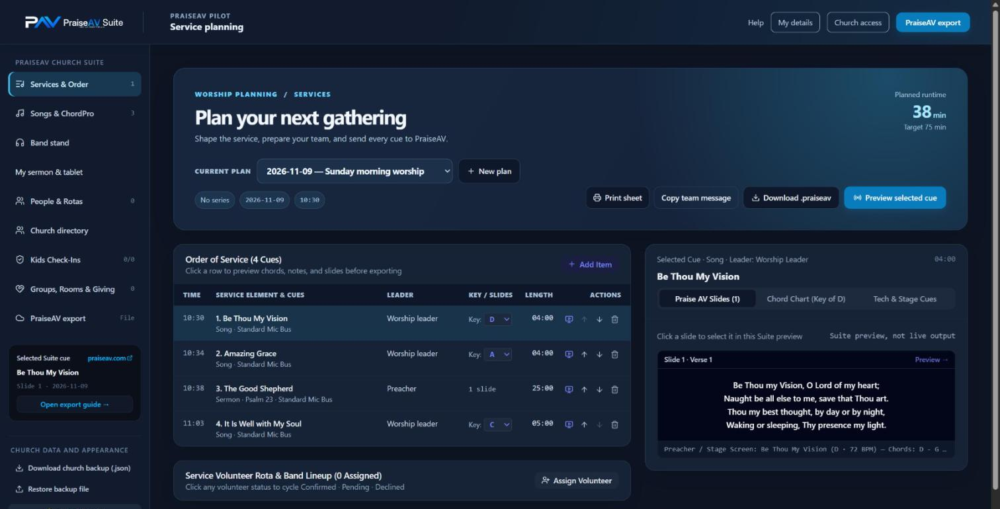
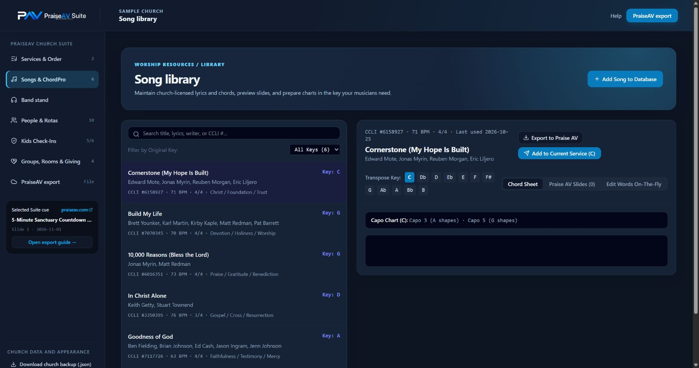

Preparar un culto
PraiseAV Suite: planificar en equipo
PraiseAV Suite es un sitio web gratuito para planificar con tu equipo: cultos, canciones y tonos, turnos, sermones, personas, registro de niños, grupos, salas y ofrendas. Después, PraiseAV en el ordenador de la iglesia lleva el culto. No necesitas el Suite para usar PraiseAV.
Ábrelo en praiseav-suite.web.app, o desde el enlace de invitación de tu iglesia. Funciona en un ordenador, una tableta o un teléfono. (Los botones del Suite y de la conexión con la cabina están en inglés.)

Configurar tu iglesia
Una persona, el administrador de la iglesia, lo hace una sola vez. Necesita una cuenta de Google que controle la iglesia. Los demás solo reciben un enlace.
- Abre el Suite, escribe el nombre y la ciudad de tu iglesia y haz clic en Find church. Si tu iglesia ya aparece, pide el enlace de la iglesia a su administrador.
- Si no aparece, haz clic en Set up this church e inicia sesión con la cuenta de Google de la iglesia. Así se reserva el nombre durante unas dos semanas mientras terminas.
- Sigue la Church setup checklist. Enlaza directamente con cada página que necesitas en Firebase (el servicio gratuito de Google que guarda los datos de tu iglesia): crea un proyecto con el plan gratuito Spark, añade una aplicación web y pega su código en el Suite, activa el inicio de sesión con Google y con Email/Password, y crea la base de datos.
- Haz clic en Copy security rules, pega las reglas en la página Rules de Firestore en Firebase y publícalas.
- Marca I published these rules y haz clic en Connect and sign in.
Los datos de tu iglesia se guardan en el proyecto de Firebase de tu propia iglesia, no en PraiseAV. El uso gratuito tiene límites; una iglesia normal queda muy por debajo.
Cuando el Suite diga que tus reglas están desactualizadas (después de una actualización del Suite), abre Church access, copia las reglas nuevas y publícalas en Firebase de la misma manera.
Invitar al equipo
Abre Church access y copia el enlace de la iglesia, o escribe el correo de alguien para abrir una invitación en tu propio programa de correo. Cada persona inicia sesión con Google o crea una cuenta con cualquier correo y una contraseña (y confirma el correo con el enlace que envía Firebase). Nadie ve los datos de la iglesia hasta que un administrador lo aprueba y le da un rol.
Todas las iglesias usan el mismo sitio del Suite; el enlace de la iglesia lleva a la gente a tu propia iglesia. Si quieres, ponlo en la web de tu iglesia como un botón de «Acceso de la iglesia».
¿Contraseña olvidada? Reset password en la página de inicio de sesión envía un correo para cambiarla.
Conectar el ordenador de la iglesia
Hazlo una vez, para que los cultos lleguen solos a PraiseAV.
- En el Suite, abre Church access → Set up the booth computer y haz clic en Copy booth code.
- En el ordenador de la iglesia, abre PraiseAV → More → Church sharing, pega el código en PraiseAV Suite, escribe un correo y una contraseña para la cabina y haz clic en Create the booth login.
- Haz clic en el enlace del correo que llega y luego en Continue en PraiseAV.
- De vuelta en el Suite, aparece una solicitud marcada Booth computer. Haz clic en Approve as booth computer.
Usa un correo de la iglesia para la cabina, como tuiglesia.av@gmail.com. La cuenta de la cabina solo ve cultos y canciones, nunca personas, ofrendas ni datos de niños. PraiseAV busca novedades más o menos cada minuto mientras está abierto.
Planificar un culto y enviarlo
- En Services & Order, haz clic en New plan y luego en Add item para canciones, lecturas, el sermón, oraciones y anuncios. Elige el tono de cada canción para este culto.
- Abre PraiseAV export y haz clic en Send to the booth. El Suite muestra cuándo el ordenador de la iglesia tiene la última versión.
- ¿Cambias algo después? Envíalo otra vez. Si el culto ya está abierto en PraiseAV, la mesa de AV ve Load update y elige un buen momento. Nada cambia en pantalla por sorpresa.
El PowerPoint o PDF de un predicador invitado se puede añadir a su fila desde cualquier aparato, incluso un iPad: viaja por la nube de la iglesia y PraiseAV lo convierte en diapositivas. ¿Sin cabina conectada? Send to PraiseAV folder (Chrome o Edge, con una carpeta compartida de OneDrive o Google Drive) o Download .praiseav siguen funcionando. Mira Cultos.
Cultos antiguos: Export all services descarga una hoja de cálculo con todos los cultos (cada elemento, tono, responsable y número CCLI) para guardarla. Delete service borra el culto que estás viendo, y Delete song en la biblioteca borra una canción. Los dos preguntan antes y no se pueden deshacer.
Sermones desde casa
Quien planifica pone el sermón en el culto y da el correo del predicador en My sermon & tablet. El predicador inicia sesión, escribe notas privadas y diapositivas para la congregación (usa --- entre páginas), añade vídeos, música, PowerPoint o PDF, y hace clic en Send my sermon to church. Los vídeos de hasta 100 MB y la música de hasta 50 MB van por la nube de la iglesia; los vídeos más grandes necesitan la carpeta compartida.
El domingo, la tableta del predicador se conecta al wifi de la iglesia y se permite como mando del predicador. Mira Mando en el teléfono o la tableta.
Avisar a la banda

Cuando las canciones y los tonos están listos, el líder de alabanza hace clic en Let the team know en el culto. Todos los que están en el turno ven You’re on the rota en Band stand y responden I can serve o Can’t make it; sus respuestas aparecen junto al turno. También abre el programa de correo del propio líder con el equipo en CCO y el orden ya escrito, así que con pulsar Enviar les llega el correo también. Tell the team again lo repite después de un cambio.
Los músicos pueden abrir Band stand en casa para leer los acordes en su propio tono y cejilla, o imprimir un cancionero. En la iglesia, sus tabletas siguen las diapositivas en directo con el atril de la banda de PraiseAV.
Quién puede ver qué
| Rol | Puede ver | Puede cambiar |
|---|---|---|
| Propietario, administrador | Todo | Todo |
| Planificador, líder de alabanza | Cultos y canciones | Cultos y canciones |
| Predicador | Cultos, canciones y sus propios borradores de sermón | Sus propios sermones |
| AV, músico | Cultos y canciones | Nada |
| Personas | La lista de personas, con las notas pastorales | La lista de personas |
| Niños | Registro de niños, códigos de recogida y notas médicas | El registro de niños |
| Finanzas | Ofrendas | Ofrendas |
| Miembro, familia | Grupos, salas y el directorio voluntario de la iglesia | Sus propios datos |
Una persona puede tener más de un rol. En el Church directory, cada adulto elige si mostrar su nombre, su familia, su correo y su teléfono; todo está desactivado hasta que lo elija. Las ofrendas son un registro para el equipo de finanzas de la iglesia, no un sistema de pago. Las copias de seguridad que descargas contienen datos personales y no están cifradas, así que guárdalas en un lugar seguro.
Mira la política de privacidad para saber más.